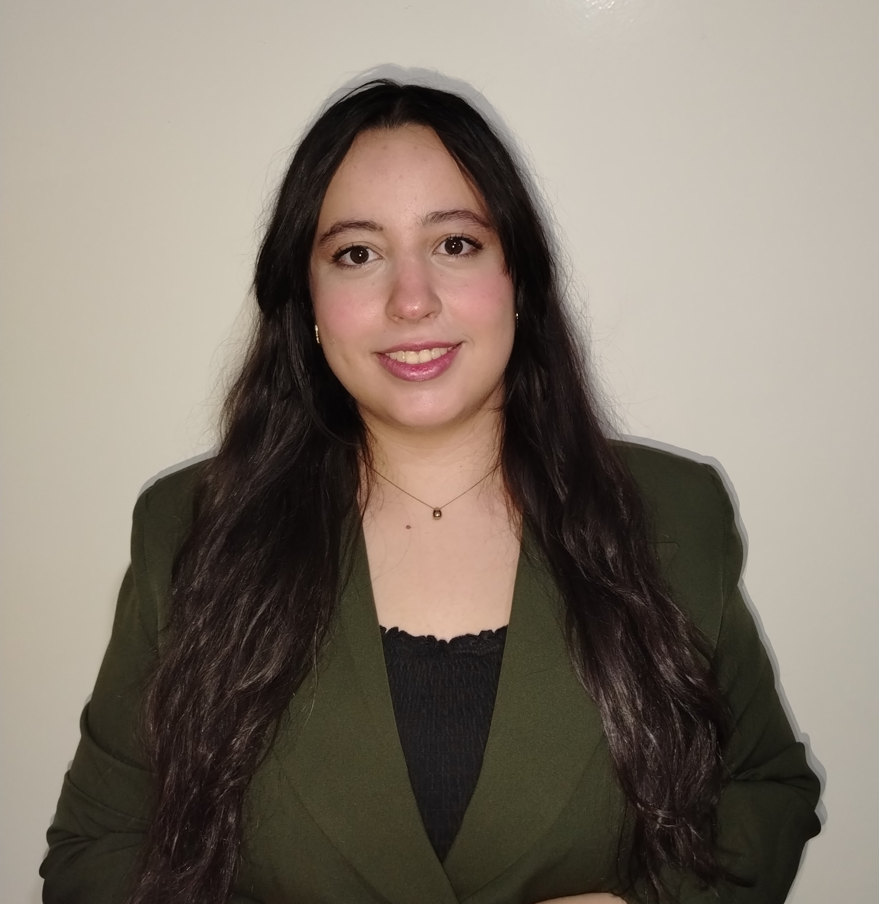

AI · DATA · SOFTWARE
Hi, I'm Yasmine.
I turn ideas into
working solutions.
An engineering graduate exploring the space between intelligent models and the people who use them.

01 / SELECTED WORK
Ideas, brought to life.
Explore the problems I've worked on
and the tools behind the solutions.
02 / A LITTLE ABOUT ME
Always learning.
Always building.
I graduated in Digital Health Engineering from Mohammed VI University of Sciences and Health. My work connects AI, data, and software—from preparing a dataset to building the interface around a model.
I enjoy understanding a user's needs, learning what a project requires, and turning an idea into something useful. Away from the keyboard, I love languages, cooking, and discovering new cultures.
Arabic · English · French
Conversational Turkish · German A2
MY TOOLKIT
AI & machine learning 01
Python · PyTorch · TensorFlow / Keras · scikit-learn · Hugging Face · OpenCV
CNNs · Transformers · NLP · LLMs · Model evaluation
Software development 02
JavaScript / TypeScript · React · Django · Node.js · Streamlit · SQL · C/C++ · APIs
Data & infrastructure 03
pandas · NumPy · ETL · Spark · Kafka · Airflow · Power BI · AWS · Docker · Git · Linux
03 / EXPERIENCE
Learning through doing.
From observing technical workflows
to building integrated applications.
FEB — JUL 2026CiprotecFinal-year engineering internship+
Software development, workflow automation, and computer vision for ProCardio. Contributed to interactive interfaces, automated pre-filling, and a deep-learning image-analysis module.
JUL — AUG 2025Cheikh Khalifa International University HospitalAI & digital solutions internship+
Worked on deep-learning image classification, covering data preparation, model training, evaluation, and integration. Explored user needs and opportunities to improve digital workflows.
JUL 2024UM6SS Biomedical Experimentation CenterTechnical observation internship+
Explored imaging workflows, 3D modeling, and digital prototyping.
LET'S CONNECT
Good ideas start
with a conversation.
Interested in AI, data, or building useful software? I'd love to connect.